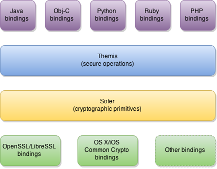

Architecture
Themis has a layered architecture to ensure high portability as well as easiness of use. Every layer provides some level of abstraction to upper layers. Below is a high level overview of Themis:

Low-level cryptographic bindings
At the lowest level there are bindings to popular cryptographic libraries and APIs. They provide implementations of needed core cryptographic primitives and allow our stack to operate in different environments. This simplifies porting to new platforms - only bindings with corresponding donor libraries have to be updated.. We usually follow best practises and sensible recommendations of each platform maintainer and try to utilize each platform native cryptographic implementation.
Soter
Soter provides an abstraction layer for Themis by wrapping all those different low-level cryptographic implementations in consistent cryptographic interfaces. These interfaces share same signatures and behavior across all supported platforms and environments. This allows our stack to interoperate between instances in different environments. Also we tried to make our interfaces easier to use as well as more secure.
Themis
Themis provides a set of high-level cryptographic operations wrapped into full cryptosystem. Each operation is a carefully selected combination of cryptographic primitives for providing security for different scenarios and use-cases. We believe there is no best generic solution to every security problem. Instead we've picked common scenarios for a set of use cases Themis's users (including us) are likely to stumble, and polished cryptosystems to support broad range of similar use-cases.
So far, we have 3 services with separate cryptosystems available in Themis:

High-level language bindings
We want Themis to be as easy as secure. We understand that the effort in adopting an "alien" module into your well-established code base may negate all potential benefits it could bring. So, with a diverse set of high-level language bindings, we try to bring Themis closer to your solution and minimize this effort. While keeping the general object model across all languages we try to tailor each binding so Themis could look natural in that specific language. So far we support:
- Python
- Java/Android
- Objective-C (iOS/OSX)
- PHP
- Ruby
and more languages are coming.